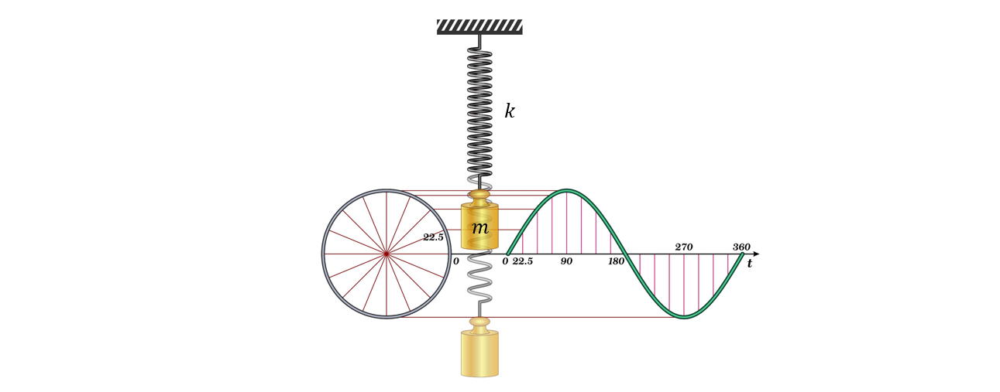
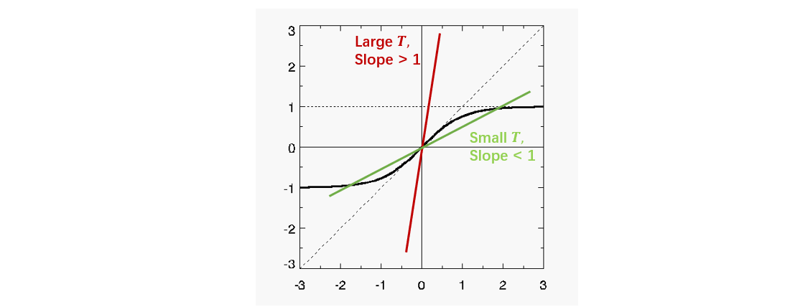

统计力学/热动力学并不是一个很新的概念，可以说是前现代（pre-modern）物理，但是在我们的生活中随处可见。统计力学的一个核心思想是：宏观系统由很多微观粒子（如分子）组成，我们对这样的系统的行为基于最大概率进行预测。所以概率论是其很重要的一个基础。在进行统计力学的学习之前，需要先确保自己对概率论足够熟悉。
我们先回顾热力学的内容当作热身。首先，一个热力学中很重要的定律就是能量守恒定律（热力学第一定律），对一个封闭系统其可以由下面公式简单描述： \[ \frac{dE}{dt} = 0 \] 其中\(E\)为系统的能量，t为时间。其另一种表述为： \[ \text{d}E = \text{d}W + \text{d}Q \] 其中\(\text{d}W\)表示运动做功带来的能量变化，\(\text{d}Q\)表示热传递带来的内能的变化。他们都依赖于变化路径，而不只是依赖于状态。
另外一个很重要的概念——熵（entropy），它描述了一个系统的混乱程度。从统计力学的角度，其可以由下面的公式定义：
\[
S=\ln \Omega, \Omega \in N^+
\] \(\Omega\)则为该宏观系统中所包含的微观状态的数量（取值为正整数）。这个公式也被称为玻尔兹曼原理，它描述了系统中的微观特性（\(\Omega\)）与其热力学特性（\(S\)）的关系。另外这里的熵与香农信息论中定义的熵相差了一个玻尔兹曼常数（\(S_{Shannon}=k_BS\)）。
所以什么是微观状态的数量\(\Omega\)呢？它指的是一个宏观系统中的微观粒子可能出现的排列关系（出现概率不为0）。假设现在有两个均匀的不断在被抛的硬币（类比为微观粒子）构成一个宏观系统，那么这个宏观系统就会有4种微观状态（HH、HT、TH、TT，H为head表示正面，T为tail表示反面）。但如果其中第一个硬币并不均匀，使得其只能抛出正面，那么这个宏观系统就只会有两个微观状态（HH、HT）。所以可以看出微观状态的数量与这个特定系统的性质有关。而同样考虑上述的硬币不均匀的例子，假设我们并不知道它的这个性质，那么我们就不知道TH、TT两种微观状态出现的概率为0，也无法判断出其仅有两个微观状态。可见，微观状态的数量也与我们对宏观系统的了解程度有关。
当然，上述的统计力学的熵的定义也可以由其下述更普遍的定义推导得到，这里不赘述，感兴趣的话可以参考视频（1:12:56 to 1:38:09）。
\[
S = - \sum_i p(i)\log p(i)
\] 其中\(i\)为微观状态，\(p(i)\)为其出现的概率。这里的概率就体现了熵的大小与我们对宏观系统了解程度有关。另外有个事实：上述的概率分布依赖于宏观系统的能量，能量越高，p(i)的分布越广，熵越大（能量和熵的大小是单调正相关的）。根据这个公式，我们也可以得到能量与熵的关系：
\[
S(E)=- \sum_i p(i,E)\log p(i,E)
\] 而\(p(i)\)如何得到？我们可以把一个系统分割成足够多的\(N\)个子系统，\(n_i\)表示其中占有状态\(i\)的子系统的数目（occupation
number），则有： \[
p(i) = \frac{n_i}{N}
\]
对于熵，我们又有热力学第二定律：熵随着时间一直在增加或至少保持不变，即：
\[
dS\ge0
\]
基于热二定律我们可以有一个推论：当一个系统是隔热的（adiabatic）/在缓慢变化，那么其熵变为0。另外，热二定律与混沌理论也有一定的关系：事物随时间会分叉/变得更加混沌，熵就也变得更大（讨论见视频（1:11:00 to
end））。
而我们日常生活中经常提到的温度（temperature），其对宏观系统的描述并没有能量、熵那么根本。温度其实对能量数量的一个描述，他们的关系如下： \[ \bar{E} = \frac{3}{2}kT_k \] 其中\(T_k\)为温度（单位为开尔文\(K\)），\(k\)为玻尔兹曼常数（\(k=1.4\times 10^{-23}J/K\)）。简化起见，后面我们定义\(T=k_BT_k\)。更根本地说，温度由一个系统的能量（即内能）和熵定义如下： \[ T = \frac {d\bar{E}}{dS} \]
在比热力学第一、第二定律更根本的，是热力学第零定律（热平衡定律）：若两个热力学系统均与第三个系统处于热平衡状态，那么这两个系统也必定相互处于热平衡。而对于不处于热平衡状态的两个系统，能量必定从温度高的系统流向温度低的系统，直到在一定时间后达到热平衡（系统的温度相同）。三个定律的关系的推导可以参见视频（15:00 to 24:30）。
我们再回到对于微观状态排列方式的讨论。假设现在有3个子系统，要将他们分配到3个状态中，每个状态有1个子系统，则这样的排列方式数目有：
\[
\text{number of arrangement} = \frac{N!}{\prod_i
n_i!}=\frac{N!}{n_1!n_2!n_3!} = \frac{3!}{1!1!1!}=6
\] 上述的公式告诉我们，重排列\(N\)个子系统到\(i\)状态中的方式的数目。这个数目越大，则意味着某种排列的出现概率越大。也就是说，在两个限制条件下（\(\sum_i n_i = N\) & \(\sum_i
n_iE_i=E_{total}\)），我们想找到一种\(N\)个子系统在\(i\)中最可能的分布方式（也就是\(n_i\)的大小）。但如果\(N\)变得非常大，这时我们就需要借助Stirling's
Approximation（\(N!\approx
N^Ne^{-N}\)，证明可参见视频（56:00 to
1:04:30））。基于这个估计，取对数，我们有（证明可参见视频（1:10:00 to 1:16:30））：
\[
\log{(\text{number of arrangement)}} = -N\sum_ip_i\log{p_i}
\] 也就是说，\(N\)足够大，在限制条件（\(\sum_i p_i = 1\) & \(\sum_i
p_iE_i=E_{total}/N\)）下，求上述排列方式数目的最大值，就是求\(p_i\)取值是多少时，熵取得最大值。
而为了求\(p_i\)，我们又需要拉格朗日乘数（Lagrange
multipliers，证明、直观理解及例子参见视频（1:27:15 to
end）），这是一个在有限制的优化问题中非常重要的算法。比如，要求\(f(x, y)\)在\(g(x,y)=0\)时的局部极值时，我们可以引入新变量拉格朗日乘数\(\lambda\)
，这时我们只需要求下列拉格朗日函数的局部极值： \[
\mathcal{L}(x, y, \lambda)=f(x, y)-\lambda \cdot g(x, y)
\] 或者更一般地， \[
\mathcal{L}\left(x_{1}, \ldots, x_{n}, \lambda_{1}, \ldots,
\lambda_{k}\right)=f\left(x_{1}, \ldots, x_{n}\right)-\sum_{i=1}^{k}
\lambda_{i} g_{i}\left(x_{1}, \ldots, x_{n}\right)
\] 直观上说，\(\lambda\)是为了让新组成的函数能够在限制条件下取得最小值。而对于求最大值的问题，我们只需要对原始方程取个反再求最小值。
回到我们具体的问题： \[
\max -N\sum_ip_i\log{p_i}, \text{ s.t. }
\left\{
\begin{array}{l}
\sum_i p_i = 1 \\
\sum_i p_iE_i=\frac{E_{total}}{N}=\bar{E}\\
\end{array}
\right.
\] 基于拉格朗日乘数，我们可以构造一个新的函数： \[
F(p) = N\sum_ip_i\log{p_i}+\alpha (\sum_i p_i-1)+\beta(\sum_i
p_iE_i-\bar{E})
\]
其中，为了将求最大值问题转变为求最小值问题，第一项的负号变为正号，\(\alpha\)与\(\beta\)为两个拉格朗日乘数。为了求上式的最小值，我们令上式的导数为0，对每一个\(p_i\)有： \[
\frac{\partial F}{\partial p_i} = \log p_i +1 + \alpha + \beta E_i = 0
\] 接着我们可以得到： \[
p_i = z^{-1}e^{-\beta E_i}
\] 这个公式描述了玻尔兹曼分布（Boltzman
Distribution·），其中\(z=e^{1+\alpha}\)为一个与\(E_i\)无关的参数。代入第一个限制条件，我们会发现其依赖于\(\beta\)： \[
z = \sum_i e^{-\beta E_i} \\
\] 这个公式被称为配分函数（partition function）。
留意到，\(\beta\)越大，\(p_i\)衰减得越快，系统中微观状态更集中分布于\(E_i\)比较小的状态，则\(\bar{E}\)越小，反之亦然。将上式代入到我们的限制条件与熵的定义式中，再经过一些技巧性变换（参见视频（18:30 to
45:00）），我们得到两个很有趣的公式： \[
\bar{E} = - \frac{ \partial \log z}{\partial \beta} \\
S = \beta \bar{E} + \log z
\] 于是我们有： \[
dS = \beta d\bar{E} + \bar{E} d\beta + \frac{\partial \log z}{\partial
\beta} d\beta = \beta d\bar{E} + \bar{E} d\beta -\bar{E} d\beta = \beta
d\bar{E}
\] 回顾温度的定义，我们有： \[
\beta = \frac{dS}{d\bar{E}}=\frac{1}{T}
\] 可以发现，\(\beta\)有其物理含义，即逆温度（inverse
temperature）。对这些公式的实际物理问题（理想气体）应用参见视频（57:00 to end）。
由上面的公式，我们又能得到： \[ \bar E-TS = - T\log z \] 其中式子左边被称为亥姆霍兹自由能\(A\)（Helmholtz free energy）： \[ A = \bar{E}-TS \]
之后我们介绍一个定理（证明参见视频（26:00 to 36:40））： \[
\left.\frac{\partial \bar E}{\partial V}\right|_{S}=\left.\frac{\partial
\bar E}{\partial V}\right|_{T}-\left.\left.\frac{\partial \bar
E}{\partial S}\right|_{V} \frac{\partial S}{\partial V}\right|_{T}
\]
这个定理能告诉我们什么？首先当我们要对一个系统进行观测的时候，维持熵不变很难观测得到，我们可以将其转换为更好观测的温度和体积。另外考虑一个绝热系统（熵不变）的压力（pressure，如气压）为\(p=\left.\frac{\partial \bar E}{\partial
V}\right|_{S}\)，且\(T=\frac{d\bar
E}{dS}\)，再基于上面三个公式，我们可以得到一个非常基本的表达式：
\[
p=-\left.\frac{\partial(\bar E-T S)}{\partial V}\right|_{T} =
-\left.\frac{\partial A}{\partial V}\right|_{T}=\left.T \frac{\partial
\log z}{\partial V}\right|_{T}
\]
这个公式适用于任何绝热系统。特别地，对于理想气体，我们可以得到理想气体公式（证明参见视频（1:04:00 to 1:08:00））：
\[
pV=NT
\] 留意到这里的\(T\)吸收了玻尔兹曼常数\(k_b\)。
接下来我们回到更微观的情况，假如我们考虑粒子间的势能（仅考虑一对粒子间的相互作用，其他更高阶的相互作用概率相对低至可忽略不计），我们有： \[ \log z = \log z_{0}-\frac{B N^{2}}{2 V} u_{0} \] 其中\(z_0\)对应着内能/温度，\(u_0\)是每对粒子在系统里的平均势能。进一步地，我们有： \[ E=-\frac{\partial \log z}{\partial \beta}=\left[\frac{3}{2} \cdot T+\frac{\rho}{2} u_{0}\right] N \\ p = \left. T \frac{\partial \log z} {\partial V} \right|_{T} = \rho T+\frac{1}{2} \rho^{2} u_{0} \] 具体的推导见视频（0:16:45 to 1:20:00）。
接下来我们讨论简谐振荡子（harmonic oscillator）运动，如下图所示：

其中弹簧的弹力系数为\(k\)，砝码的质量为\(m\)，那么这个振荡子的能量是多少？ \[
E = \frac{p^2}{2m} + \frac{kx^2}{2}
\] 其中\(p\)为砝码的动量（momentum）。接着按照之前的思路，我们将能量大小代入配分函数：
\[
z = \int e^{-\beta\frac{p^2}{2m}}e^{-\beta\frac{kx^2}{2}}
\text{d}p\text{d}x = \int e^{-\beta\frac{p^2}{2m}}\text{d}p \int
e^{-\beta\frac{kx^2}{2}} \text{d}x
\] 由换元法，我们可以得到（具体的推导见视频（23:00 to 28:00））： \[
z = 2\pi \sqrt{\frac{m}{k}} \frac{1}{\beta}= 2\pi \sqrt{\frac{m}{k}} T
\] 所以为了求能量，我们对\(z\)取对数，有： \[
E = -\frac{\log z}{\beta}=T
\] 类似的思路也可以用于求解量子简谐振荡子的能量（具体的推导见视频（39:00 to 1:11:00））。
接着我们讨论理想化/理论上的一维磁体（magnet）。假设磁体由\(N\)个仅能指向上或下两个方向（\(\sigma_i=\pm1\)表示）且彼此不相互影响的小磁体构成，且他们排成一列。每个小磁体有一个与磁场强度\(H\)有关的磁矩\(\mu\)，则这个小磁体的能量为： \[
E_i = \sigma_i\mu H
\] 故整个磁体的能量为: \[
E = \sum_i^NE_i=(n-m)\mu H
\] 其中\(n\)为指向上的小磁体的数量，\(m\)为指向下的小磁体的数量（\(n+m=N\)）。所以这\(N\)个小磁体有多少种排列方式使得有\(n\)个指向上、\(m\)个指向下？或者说，这个系统可以有几种状态？
\[
\text{\# state} = \frac{N!}{n!m!}
\] 接着我们求解配分函数，根据二项式展开（bionomial expension）：
\[
z = \sum^{\text{\# state}}_{n,m}e^{-\beta \mu H(n-m)} = \sum_n^N
\frac{N!}{n!(N-n)!} (e^{-\beta\mu H})^n (e^{\beta \mu H})^{N-n} =
(e^{-\beta\mu H}+e^{\beta\mu H})^N = 2^N\cosh {(\beta\mu H)}^N
\] 另外根据（平均）磁化强度\(M\)的定义（\(M=(n-m)/N\)），我们有\(\bar E=NM\mu H\)，所以知道了平均能量\(\bar E\)，我们就能求解\(M\)。为了求解\(\bar E\)，我们对\(z\)取对数有： \[
\bar E = - \frac{\partial \log z}{\partial \beta} = -N\mu H\frac{\sinh
{(\beta \mu H)}}{\cosh {(\beta \mu H)}}
\] 所以我们有： \[
M = - \frac{\sinh {(\beta \mu H)}}{\cosh {(\beta \mu H)}}=-\tanh {(\beta
\mu H)}
\] 回忆一下双曲正切函数的形状：
所以当温度\(T\)很低的时候，\(\beta\)很大，这时候\(M=-1\)；而当温度\(T\)很高的时候，\(\beta\)趋近于0，这时候\(M=0\)。留意到这个系统里没有\(M\)没有突变（也即后文描述的相变）。
稍微做一点推广，假设相邻的单元（如上文的小磁体，spin）会相互影响，我们就得到了非常出名的一维Ising模型。当相邻的两个单元指向同一个方向，那么其能量为负（也就是系统的偏好朝向——系统总是偏好处于低能状态）；而当相邻的两个单元指向相反方向，那么其能量为正，所以对于整个系统有：
\[
E = -j\sum_i^{N-1} \sigma_i\sigma_{i+1}
\] 其中\(j\)为一个描述能量大小的常量（如上一个例子的\(\mu
H\)）。留意到这个系统中存在对称性：相邻的单元的指向同时取反，能量大小不会改变。如果我们定义一个描述独立的相邻单元相互作用的变量\(\mu_i=\sigma_i\sigma_{i+1}\)，我们得到一个与上面的例子类似的能量表达式：
\[
E = -j\sum_i^{N-1} \mu_i
\] 接着类似地，我们可以得到配分函数与平均的相互作用大小\(\bar \mu\)： \[
z=(2\cosh {(\beta j)})^{N-1} \\
\bar \mu = \tanh {\beta j}
\] 这里的\(\bar
\mu\)也可以理解为两个相邻单元的指向相同的概率。所以假设我们在一个信息传递的游戏中，如果我们要求一列单元中的第\(i\)个准确将信息传递到第\(i+d\)个单元的概率即为（要求这个过程中传递的信息没有发生变化）：
\[
p = ( \tanh {\beta j})^{N-1}
\] 同样，留意到这个系统里没有\(M\)没有突变（也即后文描述的相变）。
接下来，我们进一步拓展，分析\(D\)维的Ising模型，这时候各单元排列在一个\(D\)维空间中，这时空间中每个单元会有\(2D\)个相邻单元。为了分析这个问题，我们需要用到平均场估计（mean
field approximation）。即这时，对于系统中第\(i\)个单元有： \[
E_i = -j \sigma_i\sum_{\text{neighbor}} \sigma = -j \sigma_i \times 2D
\bar \sigma = -2D j \bar \sigma \sigma_i
\] 接着我们求解\(\bar{\sigma_i}\)，基于平均场估计对于一个自洽的系统（self-consistent）：
\[
\bar{\sigma_i} = \bar{\sigma} = \tanh {((2Dj\beta)\bar {\sigma})}
\] 为了更直观求解这个方程，我们进行变量替换，\(y=(2Dj\beta)\bar{\sigma}\)，又\(\beta=1/T\)，我们有： \[
\frac{T}{2Dj}y=\tanh y
\] 接着画出等号两边的函数，有： 
可以看出，当温度很高，线性函数的斜率很大（斜率大于1），这时候上述方程只有\(\bar \sigma =
0\)一个解，这也跟直观印象吻合，因为温度很高的时候，各个单元随机朝向，最终平均下来即为0；而当温度比较低（斜率小于1），这时候上述方程除了\(\bar \sigma =
0\)还有其他解，这另外的解代表着磁化现象。\(T_{c}=2Dj\)为系统的临界点（critical
point），高于这个温度，系统中各单元倾向于均匀分布（\(\bar
\sigma=0\)），而低于这个温度，系统可以出现一定的偏向（\(\bar \sigma \ne0\)）。
之后，我们考虑对系统施加一个外部细微场，这时每个单元会被施加一个细微的干扰，这个干扰的大小仅依赖于其自身状态，即：
\[
E_i = -2D j \bar \sigma \sigma_i + B\sigma_i = (-2D j \bar \sigma +
B)\sigma_i
\] 类似地，我们会得到： \[
\frac{T}{2Dj}y=\tanh {(y+ B/T)}
\] 考虑到\(B/T\)为正，上图中的黑色曲线会向左平移（平移量也会取决于温度的大小），那么此时\(\bar \sigma=0\)的解就消失了，仅剩下\(\bar \sigma >0\)的解。而无论\(B\)多小，上述结论都成立，于是突变/相变（phase
transition）又出现了。
参考课程：Series of Statistical Mechanics Lectures - by Leonard Susskind, Stanford University (https://youtu.be/D1RzvXDXyqA)